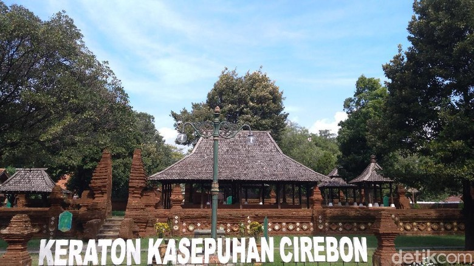
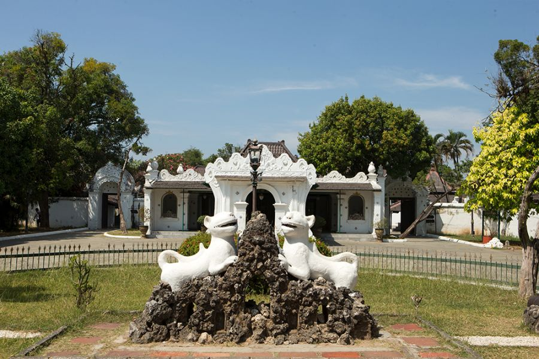
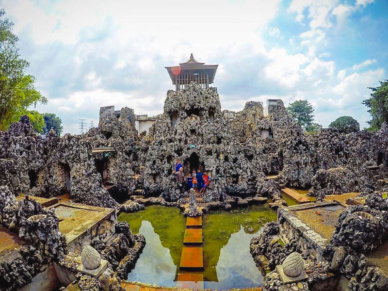
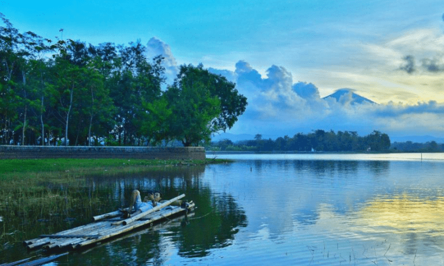

Sejarah

Sejarah Cirebon dimulai dari kampung Kebon Pesisir, pada tahun 1445 dipimpin oleh Ki Danusela. Perkampungan itu mengalami perkembangan, selanjutnya muncul perkampungan baru yaitu Caruban Larang dengan pemimpinnya bernama H.
Abdullah Iman atau Pangeran Cakrabuwana.
Banyak versi mengatakan bahwa Cirebon berasal dari gabungan bahasa Sunda dan Jawa, yaitu “ci” yang berarti air sungai dan “rebon” yang berarti udang. Sehingga jika digabungkan, “Cirebon” berarti udang yang diambil dari sungai.
Geografis

Secara geografis Kota Cirebon berada pada posisi 6,41º Lintang Selatan dan 108,33º Bujur Timur pada Pantai Utara Pulau Jawa Bagian Barat. Bentuk wilayah Kota Cirebon memanjang dari Barat ke Timur sekitar 8 kilometer dan dari
Utara ke Selatan sekitar 11 kilometer dengan ketinggian dari permukaan laut ±5 meter.
Cirebon sekarang dikategorikan sebagai suku bangsa tersendiri, lepas dari suku Sunda ataupun Jawa. Hal ini akan semakin menguatkan masyarakat Cirebon yang memiliki identitas khusus yang berbeda dengan budaya Sunda dan Jawa.
Wisata
Hadirnya tol Cipali membuat Cirebon, Jawa Barat, terus berkembang dalam sektor ekonomi dan pembangunan. Hal tersebut membuat banyak pelancong berbondong-bondong memillih Cirebon sebagai tujuan wisata.
Goa Sunyaragi

Sejarah berdirinya Gua Sunyaragi versi Caruban Nagari adalah yang digunakan sebagai acuan para pemandu wisata gua Sunyaragi. Menurut versi ini, Gua Sunyaragi didirikan tahun 1703 Masehi oleh Pangeran Kararangen, cicit Sunan
Gunung Jati. Kompleks Gua Sunyaragi lalu beberapa kali mengalami perombakan dan perbaikan.
Situ Sedong

Situ atau danau ini memiliki sejarah yang cukup panjang, tempat ini dulunya bernama Situ Pengasinan yang dibangun pada zaman Kolonial Belanda dan selesai pada tahun 1918. Tujuan dari pembangunan situ tersebut awalnya digunakan
untuk pengairan perkebunan tebu milik Pabrik Gula Sindanglaut.